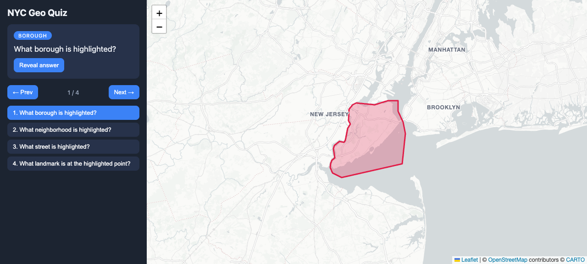
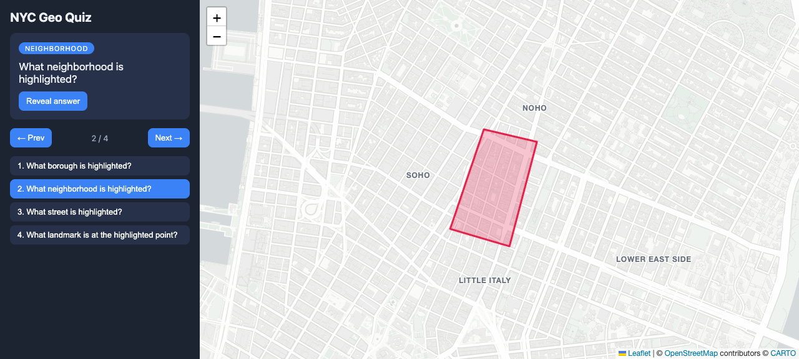
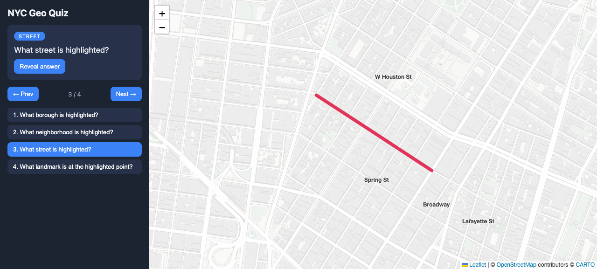
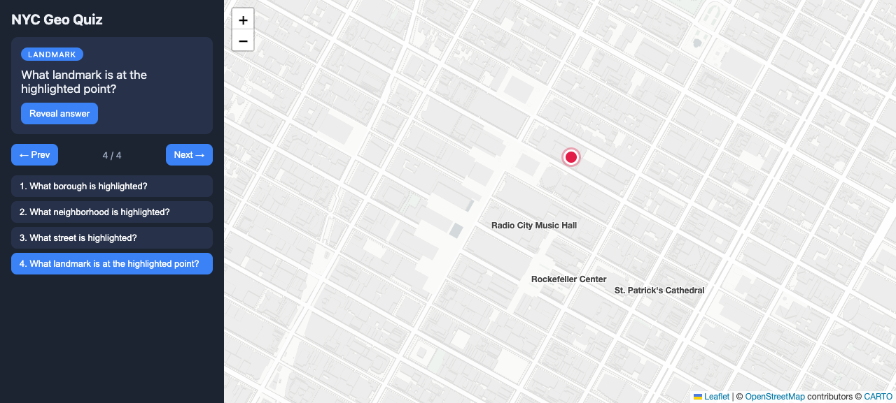
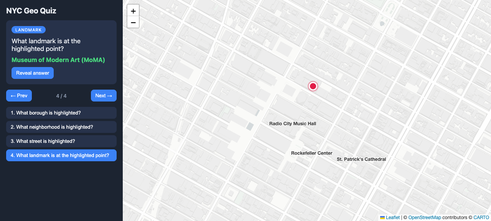
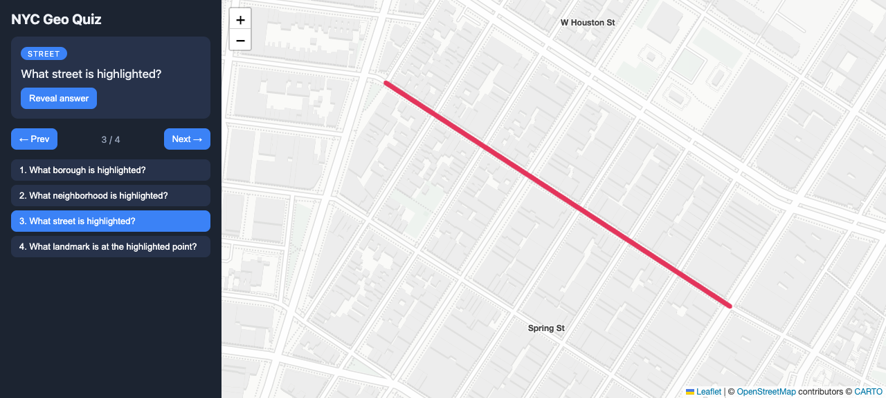

This report demonstrates the scaffolding and core modules for a web app that
teaches NYC geography by presenting map questions with partial
information: the target feature is highlighted but never named, while
surrounding context features are named but not highlighted. All screenshots
below were captured from the running app (python3 -m http.server 8642,
driven by a real Chrome instance).
| Option | Verdict | Reasoning |
|---|---|---|
Leaflet 1.9 + CARTO light_nolabels tiles |
CHOSEN | Lightweight, mature, trivial GeoJSON overlays. The decisive factor is the label-free basemap: tiles draw every street/park/building shape but contain zero text, so the app controls exactly which names are visible — precisely the "partial information" requirement. Both the CDN and tile server were validated reachable before building. |
| MapLibre GL | rejected | Vector tiles would allow toggling individual label layers, but require style-spec surgery and a heavier runtime — more machinery than the requirement needs. |
| OpenLayers | rejected | Very capable but a verbose API; overkill for a quiz view. |
js/questions.js)The only data model in scope: a Question fully describes one prompt.
{
id: string,
type: 'borough' | 'neighborhood' | 'street' | 'landmark',
prompt: string,
answer: string, // never drawn on the map
target: GeoJSON geometry, // Polygon / (Multi)LineString / Point — highlighted, unnamed
context: [{ name, labelAt: [lat,lng], kind }], // named, NOT highlighted (0..n allowed)
view: { center: [lat,lng], zoom }
}js/app.js renders any such question: highlight style is picked from the
target geometry type, and each context feature becomes a text label over the
label-free basemap.
Staten Island highlighted (real, simplified OSM polygon) with no name; Brooklyn, Manhattan, and New Jersey labeled as unhighlighted context.

Nolita's polygon is highlighted with no label, while SoHo, NoHo, Little Italy and the Lower East Side are labeled but not highlighted — exactly the requested behavior. The model supports zero, one, or several context neighbors per question.

Prince Street (real OSM geometry fetched via Nominatim, so the highlight sits exactly on the basemap street) is highlighted unnamed; W Houston St, Spring St, Broadway and Lafayette St carry labels without highlighting.

An unnamed pin marks MoMA; Radio City Music Hall, Rockefeller Center and St. Patrick's Cathedral are labeled context landmarks.

The answer is held out of the map entirely and revealed on demand in the sidebar.

Standard Leaflet zoom (buttons, scroll wheel, pinch). Verified by driving the zoom
control in the live browser: map.getZoom() reported 16 → 17 and the tiles
re-rendered with the highlight still aligned.

| Requirement | Status | Evidence |
|---|---|---|
| Git repo + README | DONE | git log; README.md documents run instructions, library research, data model. |
| Library researched, picked, validated | DONE | Section 1; CDN + tile server HTTP 200 checks; all screenshots render live tiles. |
| Borough / street / neighborhood / landmark questions | DONE | Sections 3–6. |
| Target highlighted, unnamed; context named, unhighlighted | DONE | Every screenshot; enabled by the label-free basemap. |
| Zoom in/out | DONE | Section 8. |
| Question data model only (no progress tracking) | DONE | Section 2; app has no scoring/tracking code. |